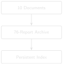
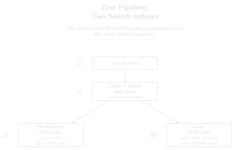

# code/chapter_08/build_faiss_index.py
from pathlib import Path
import faiss
import numpy as np
def build_index(embeddings: np.ndarray) -> faiss.IndexFlatIP:
dimension = embeddings.shape[1]
index = faiss.IndexFlatIP(dimension)
index.add(embeddings.astype("float32"))
return index
def save_index(index: faiss.Index, path: Path) -> None:
faiss.write_index(index, str(path))8 Vector Databases at Scale

Progress ████████░░░░░ 8 / 13 · Estimated time: 45–60 min · Difficulty: 🟠 Intermediate
8.1 Learning objectives
By the end of this chapter, you will be able to:
- Explain why brute-force cosine search stops being adequate as the archive grows, in concrete terms — the memory it uses and the delay before you get an answer.
- Build and query a FAISS index over DDR chunk embeddings.
- Understand the difference between a per-document index and a campaign-wide global index, and when each is the right tool.
8.2 Operational Problem
Mike, the completions engineer, has been happily querying all ten sample reports through Chapter 5’s system — but what happens when his ten-document prototype meets the full archive? Chapter 4’s embeddings @ query_vec brute-force search works fine over ten documents — it’s a single matrix multiply. The full Utah FORGE archive is 76 reports. The companion pipeline’s chunking and embedding steps, run against all 76, produce 1,428 chunks — still small by industrial standards, but already the point where you want a persistent, queryable index rather than an in-memory NumPy array you rebuild every session. And a production system needs more than one query mode: per-document search (fast, scoped to one report) and campaign-wide search across every chunk are genuinely different operations.
8.3 Theory
A vector database (or vector index library, like FAISS (Johnson et al. 2017)) organises embeddings so that similarity search doesn’t require comparing the query against every single vector.
“Index” is a word this book reuses on purpose, and it means something different each time: Chapter 3’s inverted index maps a word to the reports that contain it; this chapter’s FAISS index maps a vector to its nearest neighbours. Both let you skip scanning every document — that shared idea is why both get called an index — but they store fundamentally different things and answer different kinds of queries.
TipEngineering Translation: FAISS index
Think of Chapter 4’s brute-force search as walking every aisle of a warehouse to find a part. A FAISS index is that same warehouse with an addressing scheme: it can go straight to the right shelf instead of checking every one. At this book’s scale the “shelf” it finds is still mathematically the exact same answer — it just gets there faster and without needing everything loaded into memory by hand each time.
At this book’s scale, even the simplest FAISS index — IndexFlatIP (flat, inner-product) — is the right choice: it’s an exact nearest-neighbour search, mathematically equivalent to Chapter 4’s brute-force approach, just implemented in optimised C++ with a persistent, loadable index file. (Larger-scale approximate indexes — IVF, HNSW — trade a small amount of accuracy for speed at millions of vectors; not a tradeoff this book’s scale needs.)
Because embeddings are normalized (Chapter 4), inner product is cosine similarity — which is exactly why IndexFlatIP is the right index type rather than a distance-based one.
TipEngineering Translation: Persisting an index
Persisting an index means saving it to a file, the same way you’d file a completed report in a binder instead of reconstructing it from memory every morning. Build it once, save it, and every future session just loads the finished file — no re-embedding, no rebuilding.
8.4 Building the real index
The companion pipeline, DDR_UTAH_FORGE, builds two tiers of index:
- Per-document index (
scripts/build_index.py, companion repo) — one FAISS index per DDR, used when a question is scoped to a specific report. All 76 reports already have this in DDR_UTAH_FORGE: chunks, embeddings, and afaiss.indexfile sit indata/processed/<doc_id>/inside that separate repository — not inside this book’s own repo. - Global index (
scripts/build_global_index.py, companion repo) — a single FAISS index over every chunk across every report, used for cross-document questions like “which reports involve fishing operations.”
Running build_global_index.py against this archive’s 76 pre-processed documents produces a real, verifiable result:
Found 76 docs with embeddings
Concatenating 1,428 chunks from 76 docs...
Building FAISS IndexFlatIP ((1428, 384))...
faiss.index — 1,428 vectors × 384d384 dimensions matches all-MiniLM-L6-v2, the same embedding model from Chapter 4 — this pipeline doesn’t switch models between the toy version and the production one, it just changes how the resulting vectors are indexed and queried.
The two tiers branch from the same per-document work, then serve different questions:

8.5 Implementation
8.5.1 Step 1: build the index and save it to disk
What problem are we solving?
Turn a matrix of chunk embeddings into a fast, queryable structure, then save it so it never needs rebuilding from scratch in a future session.
Inputs
embeddings: a NumPy array of chunk vectors, shape(n_chunks, 384).- A destination file path for the saved index.
Expected Output
A faiss.index file on disk, plus the same in-memory index object ready to query immediately.
What just happened?
build_index creates an empty FAISS structure sized for 384-number vectors, then loads every chunk’s embedding into it in one call. save_index writes that structure out to a single file — the “binder” from the Engineering Translation above — so the next session can load it back instantly instead of re-embedding every chunk again.
8.5.2 Step 2: reload the index and answer a query
What problem are we solving?
In a fresh session — no re-embedding, no rebuilding — load the saved index back and answer a query against it, the same way Chapter 4’s search did, just backed by FAISS instead of a NumPy array in memory.
Inputs
- The saved
faiss.indexfile path. - A query vector (from Chapter 4’s embedding model).
top_k: how many results to return.
Expected Output
A ranked list of (chunk_index, similarity_score) pairs — the same shape of result Chapter 4’s brute-force search returned.
def load_index(path: Path) -> faiss.Index:
return faiss.read_index(str(path))
def search(index: faiss.Index, query_vec: np.ndarray, top_k: int = 5):
scores, indices = index.search(query_vec.reshape(1, -1).astype("float32"), top_k)
return list(zip(indices[0].tolist(), scores[0].tolist()))What just happened?
load_index reads the saved file back into a ready-to-query FAISS index — no re-embedding step, because the vectors were already saved inside it. search hands it one query vector and asks for the top_k closest matches; FAISS returns their positions and scores, which get paired up into the same kind of ranked list Chapter 4 produced by hand.
This mirrors the indexing pattern in the companion pipeline’s src/rag_pdf/services/search_service.py, which builds IndexFlatIP over chunk embeddings and persists it to faiss.index alongside each document’s other artefacts.
8.5.3 Step 3: index real chunks, with real metadata attached
What problem are we solving?
Everything above indexes whole documents — Chapter 4’s load_chunks() loads one vector per report, not per chunk, so a FAISS row can only ever answer “which report,” never “which page of it,” and never “which date.” Chapter 7 already built a chunker that knows each chunk’s page number; this step puts that chunker to work and adds one more thing while it’s there — every DDR filename already carries its own report date (..._2020-11-26.txt), so reading it costs nothing extra and closes a second gap at the same time. One FAISS row per chunk, with a matching metadata record — report filename, page, and date — so a search result can finally point at more than just a whole file.
Inputs
- A folder of extracted
.txtfiles:datasets/ddr_text/. - Chapter 7’s
chunk_pages_by_tokens().
Expected Output
A FAISS index with one row per chunk, and a parallel metadata list — metadata[i] is a {"report": ..., "page": ..., "date": ...} dict describing exactly what embeddings[i] is.
import re
REPORT_DATE = re.compile(r"_(\d{4}-\d{2}-\d{2})\.")
def report_date(filename: str) -> str | None:
match = REPORT_DATE.search(filename)
return match.group(1) if match else None
def build_chunk_metadata_index(text_dir: Path, model: SentenceTransformer,
chunk_tokens: int = 60, overlap_tokens: int = 15):
metadata, chunk_texts = [], []
for path in sorted(text_dir.glob("*.txt")):
pages_text = path.read_text(encoding="utf-8")
date = report_date(path.name)
for page_number, chunk in chunk_pages_by_tokens(pages_text, chunk_tokens, overlap_tokens):
metadata.append({"report": path.name, "page": page_number, "date": date})
chunk_texts.append(chunk)
embeddings = embed_texts(model, chunk_texts)
index = build_index(embeddings)
return index, metadataWhat just happened?
For every report, this runs Chapter 7’s page-aware chunker, embeds each resulting chunk, and appends a matching {"report", "page", "date"} record to metadata in the same order the chunk’s vector gets added to the index. Row i of the FAISS index and entry i of metadata describe the same chunk — that parallel-list discipline is the entire mechanism; there’s no cleverness beyond keeping the two lists in lockstep. report_date() is a one-line regex against the filename, not a new data source: every filename in this archive already carries its report’s date (confirmed against all 76 real filenames in the full archive — zero exceptions to the _YYYY-MM-DD. pattern), so extracting it is free once you’re already reading the filename for report.
Run this against the real ten-report sample and it builds 333 chunks across 10 reports — roughly ten times the rows the whole-document index above has, all from the exact same source text. Query it for "stuck pipe" and the difference isn’t just more rows: report #38 — the actual stuck-pipe day — jumps to rank 1 at a score of 0.4362, clearly separated from its nearest competitor. The whole-document index earlier in this chapter ranked the same report 2nd, at 0.1978, behind a report that only mentions the topic in passing. Chunking doesn’t just enable page-level citations — it measurably sharpens the ranking itself, for the same reason Chapter 4’s Field Notes already showed: a whole report blends a few relevant sentences with pages of unrelated tables, and a smaller chunk can’t hide relevant text inside irrelevant text the way a whole document can.
8.6 Production Reality
This chapter’s IndexFlatIP scales cleanly to Utah FORGE’s 1,428 chunks — both to build and to query. A single operator’s entire well portfolio, or a service company handling multiple clients, changes the picture:
- millions of chunks make exact search too slow; that’s when approximate indexes (IVF, HNSW) become the right tradeoff, not just an option mentioned in passing
- a flat index file rebuilt from scratch every time a new DDR arrives doesn’t scale — production systems need to add new vectors incrementally, without reprocessing the whole archive
- multiple engineers querying the same index at once, from different applications, usually means a managed vector database (pgvector, Pinecone, Weaviate) instead of a single
faiss.indexfile on one machine’s disk - if some wells’ data is more sensitive than others (a joint-venture well, say, versus a wholly-owned one), a single global index needs an access-control layer on top of it — FAISS itself has no concept of “who’s allowed to see this chunk”
- this chapter’s own code deliberately restricts FAISS and the embedding model to a single CPU thread (
OMP_NUM_THREADS=1). Not a hypothetical caution — a fix for a real, reproducible crash confirmed during this book’s own testing: on macOS, FAISS and PyTorch (which the embedding model runs on) each bring their own separate copy of the same multi-threading library, and letting both use more than one thread at once corrupts memory and crashes the whole program. Invisible at ten documents. A genuinely large archive would want real multi-threaded performance back, which means revisiting that limit deliberately — checking whether your specific combination of library versions still hits the same conflict — rather than leaving every embedding job capped at one thread by default forever
8.7 Practical exercise
🟢 Beginner
Try it yourself: Build a FAISS index over the ten sample DDR embeddings from Chapter 4, save it to disk, reload it in a fresh Python session, and confirm a query for “stuck pipe” returns the same ranked order as Chapter 4’s brute-force search — report #38 at rank 2, report #39 at rank 5.
You’ll know it worked when: the FAISS-based and brute-force results agree — because, mathematically, IndexFlatIP over normalized vectors is cosine similarity, just implemented differently.
8.8 Field notes
Warning🔧 Field notes: proving ‘exact, not approximate’ rather than asserting it
Action: run five different real queries — "stuck pipe", "fishing operation", "packers failed to set", "torque problems", "losses" — through both the brute-force NumPy search and a FAISS IndexFlatIP built over the same ten embeddings, and compare the full ranked order each one returns.
Result: all five queries produce byte-for-byte identical rankings between the two methods.
'stuck pipe': brute-force order == FAISS order: True
'fishing operation': brute-force order == FAISS order: True
'packers failed to set': brute-force order == FAISS order: True
'torque problems': brute-force order == FAISS order: True
'losses': brute-force order == FAISS order: TrueWhy: this is exactly what the Theory section claimed — IndexFlatIP computes the same inner-product comparison as embeddings @ query_vec, just in optimised C++ rather than NumPy. There’s no approximation step anywhere in this index type for it to disagree with brute force on.
Lesson: “mathematically equivalent” is a claim worth testing, not just trusting because it sounds right — especially before you rely on it at a scale where you can no longer eyeball the difference. It took five lines of code to confirm this one.
8.9 Challenge exercise
🔴 Advanced
Challenge: If you have the full 76-report Utah FORGE archive (datasets/forge_archive/) and can run the heavier dependencies (sentence-transformers, faiss-cpu), chunk and embed all 76 reports yourself with the production pipeline’s own parameters — 224 tokens, 56-token overlap — and compare against the real 1,428-chunk count above. Expect a real gap, not just rounding noise: this book’s chunker uses pdfplumber’s plain text extraction, which pulls noticeably less text out of each DDR’s data tables than the production pipeline’s table-aware extraction does, so it produces fewer chunks even with identical chunking parameters. A reference solution is in code/chapter_08/challenge/.
8.10 Key takeaways
IndexFlatIPat this book’s scale is exact, not approximate — you’re not trading away accuracy, only reimplementing brute-force search more efficiently and persistently.- Per-document and global indexes serve genuinely different questions; build both rather than forcing one index to do both jobs.
- Indexing real chunks instead of whole documents isn’t just what makes page-level citations possible — it measurably improved this chapter’s own “stuck pipe” ranking, from 2nd place to 1st.
- Scaling the index doesn’t fix retrieval quality on its own — that’s the next chapter’s problem, though chunk-level indexing already closes part of the gap.
8.11 Repository files
| File | Purpose |
|---|---|
code/chapter_08/build_faiss_index.py |
FAISS IndexFlatIP build/save/load/search, plus chunk+metadata indexing |
code/chapter_08/build_full_archive.py |
Reproduces the full 76-report archive from the public source |
datasets/forge_archive/ |
The full 76-report Utah FORGE archive |
DDR_UTAH_FORGE/scripts/build_index.py |
Per-document index builder (companion repo — requires DDR_UTAH_FORGE) |
DDR_UTAH_FORGE/scripts/build_global_index.py |
Campaign-wide global index builder (companion repo — requires DDR_UTAH_FORGE) |
CautionCHECKPOINT — Chapter 8
Tip✓ WHAT YOU BUILT
build_faiss_index.py — a persistent, queryable FAISS vector index: build it once, save it to disk, and every future session loads it back instantly instead of re-embedding the archive. Its chunk-level variant attaches real (report, page) metadata to every row, ready for Chapter 10’s citations.
8.12 What can you do now that you couldn’t do before?
You can build a persistent, queryable index over an entire report archive that survives a restart — and you’ve verified, not just assumed, that scaling up the infrastructure didn’t change a single answer the retrieval gives back. Every row in the chunk-level index also carries a real page number, ready for Chapter 10 to actually cite.
8.13 Suggested next step
Coming up in Chapter 9: A fast index doesn’t guarantee good retrieval. Chapter 9 looks at the retrieval scoring code itself — how sparse and dense signals get combined, and what it takes to make that combination numerically sound.